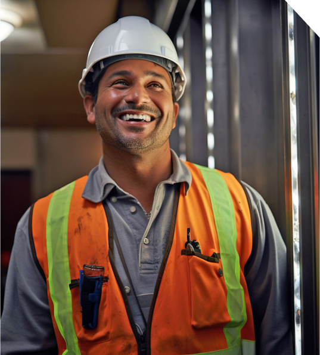
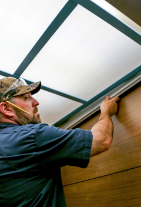
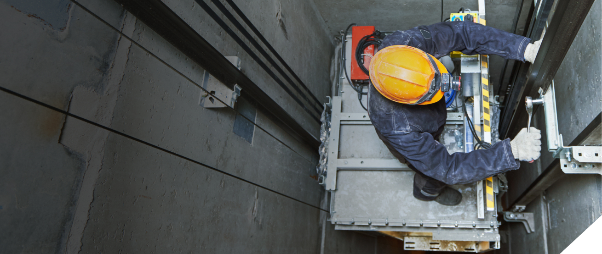

{{ 'about.heroTitle' | translate }}
{{ 'about.heroText' | translate }}
{{ stat1 }}%
{{ 'about.stats.stat1Label' | translate }}
{{ stat2 }}%
{{ 'about.stats.stat2Label' | translate }}
{{ stat3 }}%
{{ 'about.stats.stat3Label' | translate }}
{{ 'about.approach.title' | translate }}
{{ 'about.approach.subtitle' | translate }}
{{ 'about.approach.text' | translate }}

{{ 'about.peopleFocus.title' | translate }}
{{ 'about.peopleFocus.text' | translate }}
{{ 'about.experience.title' | translate }}
{{ 'about.experience.text' | translate }}
{{ 'about.experience.tagline' | translate }}
{{ 'about.technicians.title' | translate }}
{{ 'about.technicians.text' | translate }}
{{ techStat1 }}
{{ 'about.technicians.stat1Label' | translate }}
{{ techStat2 }}
{{ 'about.technicians.stat2Label' | translate }}


